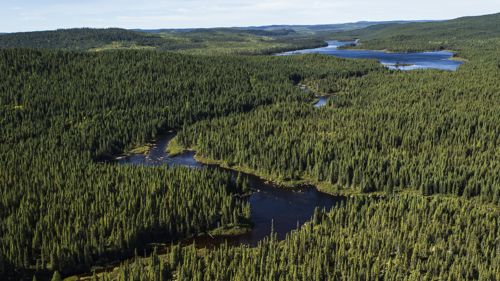

The park is located in the Taiga forest vegetation region. This very specific forest can only house hardy coniferous trees because of specific qualities they posses which allow them to survive the somewhat harsh weather. Firstly, they have rather long roots which allow them to reach deep into the ground and salvage whatever nutrients they can from our somewhat leached soils. Secondly, they boast a very sticky sap, which prevents their leaves, which are usually needles, from freezing. They also hold very thick bark. This combined with the waxy coating on their needles, helps them hold more moisture than normal, allowing them to survive the colder climate. Finally, they have the biological advantage of being able to conduct photosynthesis on any day past the growing season, as long as it is warm enough. The mountain of traits give them the edge at surviving at our park.

The parent material of our soil is mostly glacial debris and marine sediments. Black Spruce and Balsam Firs grow particularly well. There are also some deciduous trees in the park such as birch and aspen. Mosses help keep many of the wildlife alive. You can enjoy our wide variety of berries from black and blueberries to crow and cloudberries. You can view the provincial plant, the one and only pitcher plant. Worry not we have nets around the plants. You can also view the vast range wildflowers in the form of rare orchids and plants.
We feel as though our community is at a loss of knowledge regarding amounts of watering plants should get. The concept of leached soils are not very well known, and as a result, people tend to over-water their gardens. Many people now understand that eating locally grown foods not only taste better, but also make everyone feel better with the regret of a carbon footprint not sticking to us. However, despite all these backyard gardens, people are not getting the full harvest all the time, perhaps because of the quality of their soil. If people applied the knowledge of leached and calcified soils, our neighbours and us could have much better results from our efforts. Therefore, we feel pushed to make a project that teaches the general population about these concepts, and we plan on doing so.